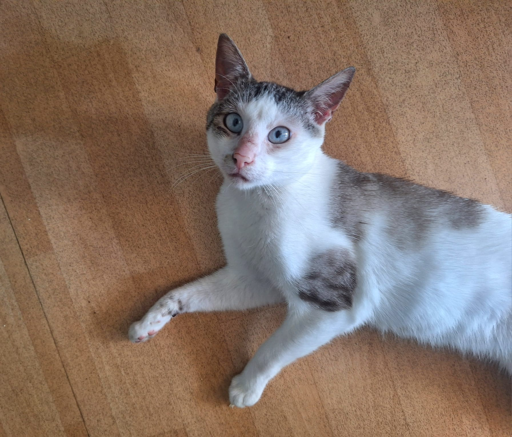
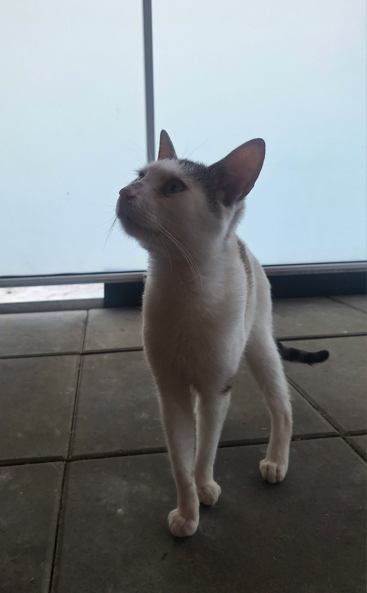
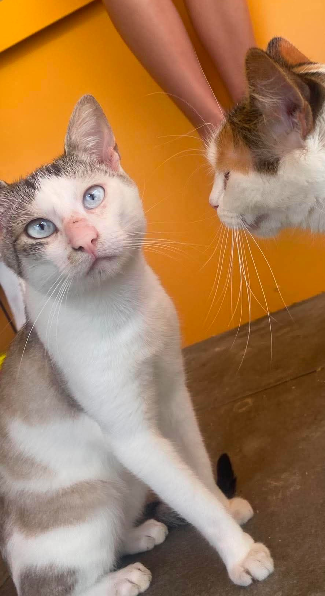
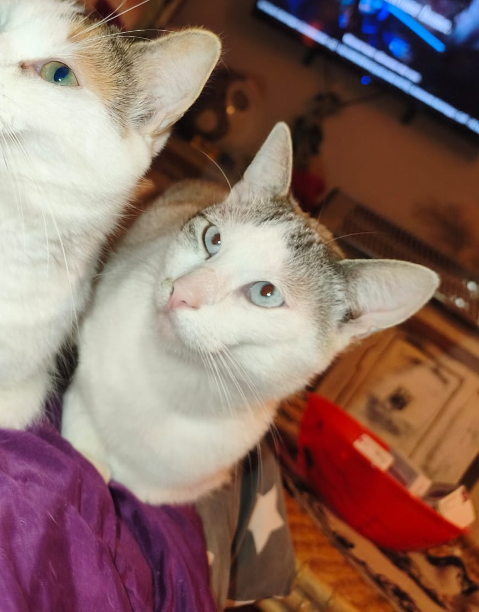

Nos protégés

Clochette
11 ans · Stérilisée et identifiée
Secteur Saint-André-lez-Lille
Clochette a beau avoir 11 ans, elle déborde d'énergie et de joie de vivre ! Sociable, affectueuse et très joueuse, elle adore les caresses. Elle est OK enfants, OK chiens et OK chats.


Norbert et Nina
5 et 4 ans · À adopter ensemble
Visibles à Lille
Un objectif qui nous tient à cœur : faire adopter ensemble Nina (grise et blanche) et Norbert (tigré) 🫶 En dépit des changements de familles d'accueil, on a toujours fait en sorte de ne pas les séparer, car ils sont fusionnels et auraient beaucoup souffert d'une séparation... Norbert a 4 ans et il est hyper HYPER affectueux et proche de l'homme. Il a le ronronnement facile et accourt pour réclamer sa dose quotidienne d'amour lorsqu'il voit ses humains. Nina quant à elle est un peu plus indépendante, mais très attachante et joueuse ! Toujours présente pour faire le cirque 😁 C'est un duo très touchant qui saura rendre votre quotidien plus beau 🌞 Venez les rencontrer à Lille !


Pilou
2 ans · Castré et identifié
OK chats, chiens, lapins et enfants · Visible à Villeneuve-d'Ascq
Pilou est un chat élégant à la frimousse bien à lui qui vous fera fondre d'amour ! Il est très sociable et il est toujours dans les pattes de ses humains préférés pour avoir un peu d'attention… et il est aussi un peu pot de colle la nuit (tout en se faisant discret pour ne pas déranger le sommeil de ses humains) ! Bref, un chat qui déborde d'amour à offrir ! Et en prime, il est OK chats, chiens, lapins, enfants… ce n'est vraiment pas un chat compliqué et il a tout pour plaire ✨ À vos candidatures 🐾






Baloo et Bagherra
7 mois · À adopter ensemble
Visibles à Lille
Baloo (noir et blanc) et Bagherra (noir) cherchent une famille au grand cœur qui les adoptera ensemble 🫶 Nés en avril, ce sont deux grands chatons qui sont très fusionnels et en même temps, très proches de l'homme. Ils sont donc sociables, joueurs et affectueux 🤍🖤 Baloo est un chaton bien dans ses pattes qui n'a peur de rien, il est très affectueux et proche de l'homme. Bagherra quant à lui est un peu plus peureux mais son frère l'aide à prendre confiance 😁 Une fois acclimatés, ce seront de merveilleux chats qui vous offriront les plus beaux moments de votre vie ! Qui leur ouvrira sa porte ? ✨


Mimi et Nouméa
5 ans · Deux sœurs
Visibles à Roubaix · Période de test possible
Mimi (tache blanche) et Nouméa (pelage brun foncé) sont deux sœurs recueillies à la suite d'une campagne de stérilisation. Très craintives au départ, nous avons souhaité leur offrir un foyer quand même pour les sortir de la rue. Aujourd'hui, les minettes sont à des stades différents de sociabilisation : Nouméa est très très affectueuse, elle a besoin du contact avec l'humain et adore les gratouilles ! Mimi quant à elle est plus réservée mais elle prend peu à peu confiance. L'adoption séparée est envisageable même si nous préférerions qu'elles partent ensemble. Une période de test est possible avant l'adoption. Venez les rencontrer à Roubaix ✨